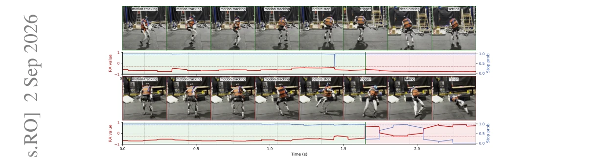
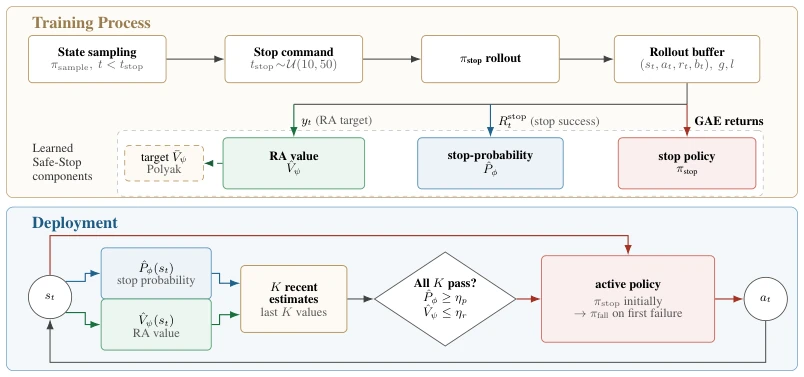
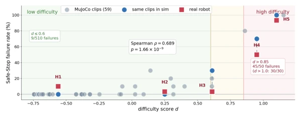
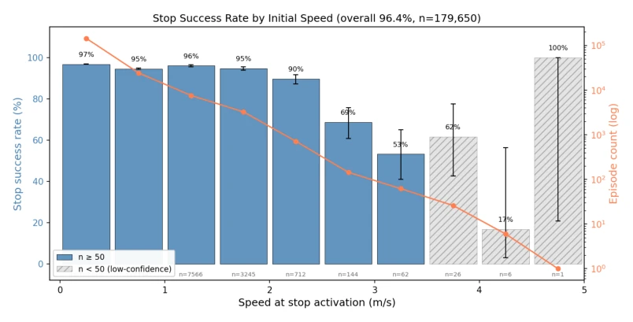
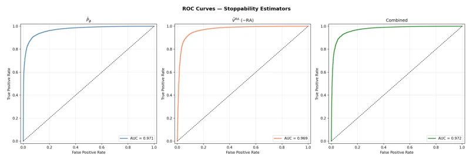
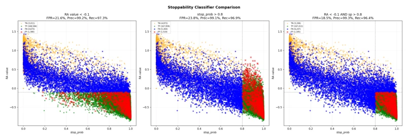
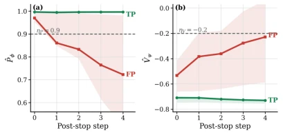
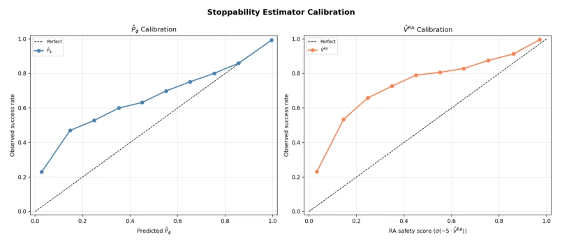
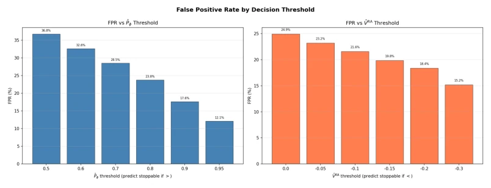
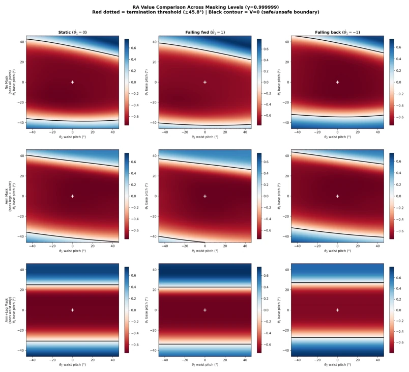

This paper equips humanoid robots with an "emergency braking" system, but the core logic is actually very simple: do not force it; if it cannot hold, fall. The authors decompose the question of "whether it can stop" into two complementary perspectives: one calculates probability based on historical data, and the other calculates risk value based on physical states. This "double insurance" mechanism is indeed more reliable than relying solely on a black-box model, after all, in the field of robotics, the cost of a single signal error is often a face-plant. However, the so-called "task-agnostic" claim has a hint of boasting, after all, the sampling strategy used for training (e.g., running) and the behavior strategy during deployment (e.g., motion tracking) differ significantly; although the paper claims transferability, experimental data also shows that cross-domain performance does fluctuate. Additionally, that "fall strategy" is simple to the point of being outrageous; it is just a damping mode; if it really falls, the word "safety" here probably needs to be questioned. Overall, this is an engineering patch that runs very well in simulation, but whether it can withstand complex collisions in the real world still depends on luck.
When humanoid robots execute tasks in shared workspaces, emergency stopping is a mandatory requirement. However, existing systems usually adopt fixed strategies (such as directly zeroing velocity), completely ignoring whether the current state can actually stop safely. Once the robot is in unrecoverable states such as high-speed running, sharp turning, or air phase, forcing a stop may instead lead to more severe falls. Existing fall prediction methods (such as [10, 11, 9]) mostly rely on trajectories generated by specific behavior policies; once the upstream task switches from motion tracking to manipulation, the predictor needs to be retrained, lacking generalizability. In addition, existing safe reinforcement learning methods mostly focus on constraints during the training process, rather than real-time decision-making during deployment. Safe-Stop aims to solve this pain point: when an emergency stop command is issued, intelligently judge whether the current state still possesses "stoppability". If it cannot stop, decisively switch to a fall protection strategy, rather than blindly attempting to stop. This fills the logical gap between "behavior policy" and "stop/fall decision", avoiding equipment damage caused by misjudgment.

Figure 1: Safe-stop accurately predicts the stoppability of the robot. Top: When the estimates lie in a recoverable range with low reach-avoidance value ˆVψ and high stop-probability estimate ˆPϕ, triggering stop policy leads to a stable halt immediately. Bottom: When the estimates lie in an unrecoverable range, the stop policy leads to a fall as predicted.
The Safe-Stop framework models the emergency stop problem as a "Reach-Avoid" problem; the core consists of three parts: a task-agnostic stop policy, a dual estimator stoppability assessment module, and a window-based consistency decision layer. First, train a general stop policy π_stop, which does not depend on upstream task commands, but executes deceleration and stabilization actions based solely on proprioceptive data (such as joint positions, angular velocities, etc.). Second, design two complementary estimators: one is the stop probability estimator ˆP_ϕ, which predicts the probability of successfully stopping under π_stop through supervised learning; the other is the Reach-Avoid value function ˆV_ψ, based on Hamilton-Jacobi ideas, using physical state signals (such as height, tilt, velocity) to calculate a "danger value", where low values represent safety and high values represent imminent falling. These two estimators are trained independently and do not interfere with each other. Finally, in the deployment phase, the system does not rely on estimates at a single moment, but adopts a sliding window mechanism (K steps); only when ˆP_ϕ is continuously above the threshold and ˆV_ψ is continuously below the threshold within the past K steps is the stop strategy executed; once either condition is not met, immediately switch to the simple damping fall strategy π_fall. This design effectively suppresses misjudgments caused by instantaneous noise through "dual signal cross-validation" and "time window smoothing", ensuring the robustness of the decision.

Figure 2: Safe-Stop training and inference. Training samples pre-stop states under πsample, issues a randomized stop command, and rolls out πstop to collect targets for the stop policy, stop-probability estimator, and RA value estimator. At deployment, Safe-Stop evaluates recent stop-probability and RA-value estimates and continues with πstop only when all K checks pass; otherwise switches to πfall
Experiments were conducted on the Unitree G1 humanoid robot and the NVIDIA Isaac Lab simulation environment. The dataset contains 179,650 out-of-distribution (OOD) motion capture initial states from BONES-SEED, covering various behaviors such as walking, turning, dancing, etc. Evaluation metrics include stop success rate, false positive rate (FPR), and precision. Results show that Safe-Stop achieved a 96.4% stop success rate on OOD data, with a false positive rate as low as 3.89% and precision as high as 99.78%. Ablation studies show that dual estimator joint decision-making is superior to single estimator, and introducing a time window (K=5) can significantly reduce the misjudgment rate. Additionally, experiments also found that masking arm joint information in the estimator input actually improved fault detection capability in OOD scenarios, indicating that arm state might be a confounding factor. Cross-policy validation shows that models trained based on running strategies can transfer relatively well to motion tracking tasks, but reverse transfer effects are poor, revealing the impact of sampling strategy distribution on generalization.

Figure 3: RA-guided runtime trigger study. Difficulty score d = maxt ˆVψ(st) is measured in a behavior-only pre-scan. Gray dots show all 59 MuJoCo clips; blue circles and red squares show matched sim and hardware failure rates for H1–H5.

Figure 5: Stop success rate by initial speed on out-of-distribution motion data (96.4% overall). The policy maintains > 94% success below 2 m/s and degrades gracefully at higher speeds, with a clear recoverability boundary around 2–3 m/s. The apparent recovery of the final near-5 m/s bin is caused by a very small number of rare high-speed samples, so we do not interpret it as a monotonic trend.

Figure 7: ROC curves for three stoppability classifiers on out-of-distribution motion data: ˆPϕ alone (AUC = 0.971), ˆVψ alone (AUC = 0.969), and combined score (AUC = 0.972).

Figure 8: Stoppability classifier comparison on OOD motion data (179,650 episodes). The com- bined classifier (right) achieves the lowest FPR (18.5%) by requiring agreement from both estima- tors.
其他图片Other Figures

Figure 4: Mean TP/FP estimator trajectories after stop activation (bands: IQR). Episodes pass the instantaneous gate at step 0; FP traces lose agreement within the K=5 window.

Figure 6: Reliability diagrams for ˆPϕ (left) and ˆVψ (right) on out-of-distribution motion data. Both estimators are well-calibrated: predicted values closely track observed success fractions along the diagonal.

Figure 9: FPR by decision threshold for ˆPϕ (left) and ˆVψ (right) on OOD motion data.

Figure 10: RA value landscapes under value-observation mask variants. Each panel applies a differ- ent static observation mask to the value input.